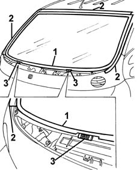
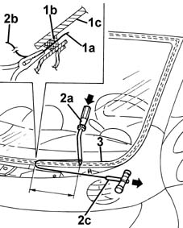
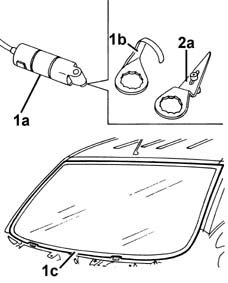
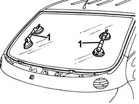
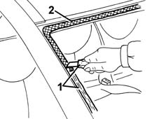
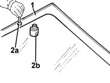
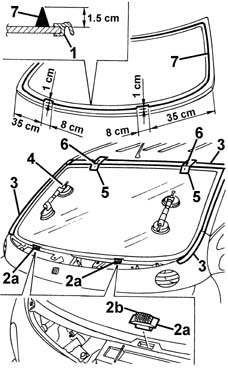
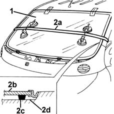

7035A18 WINDSCREEN GLASS R R INCLUDING CLEANING OF HOUSING
- Path
- Procedures > 70 FITTINGS > 7035 BODYSHELL WINDOWS > 7035A WINDSCREEN > 7035A18 WINDSCREEN GLASS R R INCLUDING CLEANING OF HOUSING
- Kind
- repair procedure (removal / refitting; the operation number is the code)
- Applies to
- all engines; all production periods
- Interactive page
- https://sloeber94.github.io/elrnDB-fMltpl/en/#/2892158
Applies to: all engines; production: fino a 05/99, da 09/03, da 06/99 a 03/02, da 04/02 a 08/03, fino a 05/04
 Removing
Removing
 Refitting
RefittingOp. 7065C34 L/H OR R/H SUN BLIND (ONE) - R+R
(right and left).
Op. 7040H33 GLASSES HOLDER (1) LH OR RH, ON ROOF TRIM - R R
(right and left).
Op. 5580E22 ANTI-THEFT DEVICE SIREN - R+R
Op. 7040E50 FRONT MODULAR COURTESY LIGHT UNIT - R+R
Op. 7065C68 REAR VIEW MIRROR - R+R
Op. 7040H30 FRONT PILLAR TRIM - R R
(right and left).
Op. 5050B32 WINDSCREEN WIPER ARM/S - R+R
(right and left).
Op. 7055A18 L/H OR R/H SIDE RUBBING STRIP DECORATIVE SEAL - R+R
Op. 7055A20 L/H OR R/H SIDE RUBBING STRIP DECORATIVE SEAL - R+R
(To remove the window by vibrating knife.)
Protect the facia and wings using covers.
1. Remove the perimetral seal of the windscreen.
2. Apply adhesive tape to protect the edges of the bodywork along the side and top of the windscreen.
3. Fully lower the pegs on the windscreen's retaining blocks.

Applies to: all engines; production: fino a 05/99, da 09/03, da 06/99 a 03/02, da 04/02 a 08/03, fino a 05/04
The bead of sealant on the windscreen can be cut either by harmonic wire or by vibrating knife; both methods are described below.
To cut the bead using harmonic wire, proceed as described below.
1. Cut a section of harmonic wire about 50 cm long, then, using pliers, insert one end (1a) of the harmonic wire through the bead of sealant (1b) which secures the windscreen (1c).
2. Secure the end (1b) of the wire to the appropriate retaining tool (2a) located inside the car.
Secure the end (2b) of the wire to the traction handle (2c) located outside the car.
3. The operator inside the car must press the end of the tool (2a) on the bead of sealant (3) at about 30 cm from the point of passage of the wire.
The other operator outside the car must pull the handle (2c) following the outline of the windscreen, and cut the bead of sealant (3).
Repeat the operation in sections of about 30 cm, until the whole of the bead of sealant (3) is cut.

Applies to: all engines; production: fino a 05/99, da 09/03, da 06/99 a 03/02, da 04/02 a 08/03, fino a 05/04
To cut the bead using the vibrating knife, proceed as described below.
1. Use the vibrating knife (1a) with blade (1b) and cut the bead of sealant at the bottom (1c) of the windscreen working from outside the car.
2. Fit the blade (2a) and cut the bead of sealant along the rest of the perimeter of the windscreen working from inside the car.

Applies to: all engines; production: fino a 05/99, da 09/03, da 06/99 a 03/02, da 04/02 a 08/03, fino a 05/04
1. After cutting all the bead of sealant, fit the suction handles on the windscreen, then with the assistance of a second operator, remove the windscreen and rest it on a supporting stand.

Applies to: all engines; production: fino a 05/99, da 09/03, da 06/99 a 03/02, da 04/02 a 08/03, fino a 05/04
Refitting
Removing1. Using a suitable tool, cut and smooth off the bead of sealant in the windscreen frame, so as to leave a thickness of between 0.25 and 1 mm, without scratching the paintwork. The sealant left in the frame will act as a backing for the new bond.
2. Clean the windscreen seating carefully with compressed air and degrease thoroughly using heptane.
If glueing takes place 60 minutes after cutting and smoothing the bead of sealant, treat the sealant surface with the specific activator and wait 15 minutes before fixing the windscreen.
 | Type | Component | Name | Qty. |
|---|---|---|---|---|
2 | PUR activator | Windscreen glass | - | - |
Touch up the paintwork if necessary.

Applies to: all engines; production: fino a 05/99, da 09/03, da 06/99 a 03/02, da 04/02 a 08/03, fino a 05/04
Check that the window is undamaged.
1. Degrease the screen-printed edge of the new windscreen using heptane.
2. Using the swab (2a) supplied in the kit, apply the glass adhesion promoter (primer) (2b) on the printed perimeter.

Applies to: all engines; production: fino a 05/99, da 09/03, da 06/99 a 03/02, da 04/02 a 08/03, fino a 05/04
1. Fit the seal around the perimeter of the windscreen.
Avoid touching the treated area with the hands.
Use a new seal.
2. Remove the retaining blocks (2a) and make all the pegs (2b) come out completely, then refit the blocks.
3. Remove the adhesive tape from the edges of the bodywork, along the sides and top of the windscreen frame.
4. Test fit the windscreen and centre it perfectly, using the retaining blocks (2a).
5. After centring the windscreen, mark the relative positions of the windscreen and seating, using strips of adhesive tape.
6. Cut the adhesive tape strips and remove the windscreen.
7. Use an air gun to extrude a bead of sealant as evenly as possible along the perimeter of the windscreen.
| Type | Component | Name | Qty. |
|---|---|---|---|---|
7 | PUR activator | WINDSCREEN GLASS | - | - |

Applies to: all engines; production: fino a 05/99, da 09/03, da 06/99 a 03/02, da 04/02 a 08/03, fino a 05/04
1. With the assistance of a second operator, fit the windscreen in its seating immediately after applying the sealant and bed it in place.
2. Fit the belt (2a) as shown in the figure and tension it so as to apply even pressure over the entire windscreen, in order to ensure a correct match between windscreen (2b), sealant (2c) and windscreen frame (2d).

Applies to: all engines; production: fino a 05/99, da 09/03, da 06/99 a 03/02, da 04/02 a 08/03, fino a 05/04
Before refitting the exterior and interior components of the car, check that there are no leaks by conducting a water test.
Op. 7055A20 L/H OR R/H SIDE RUBBING STRIP DECORATIVE SEAL - R+R
(To remove the windscreen using a vibrating knife.)
Op. 7055A18 L/H OR R/H SIDE RUBBING STRIP DECORATIVE SEAL - R+R
Op. 5050B32 WINDSCREEN WIPER ARM/S - R+R
(right and left).
Op. 7040H30 FRONT PILLAR TRIM - R R
(right and left).
Op. 7065C68 REAR VIEW MIRROR - R+R
Op. 7040E50 FRONT MODULAR COURTESY LIGHT UNIT - R+R
Op. 5580E22 ANTI-THEFT DEVICE SIREN - R+R
Op. 7040H33 GLASSES HOLDER (1) LH OR RH, ON ROOF TRIM - R R
(right and left).
Op. 7065C34 L/H OR R/H SUN BLIND (ONE) - R+R
(right and left).
Applies to: all engines; production: da 06/04
Removing
RefittingOp. 7065C34 L/H OR R/H SUN BLIND (ONE) - R+R
(left and right sides).
Op. 7040H33 GLASSES HOLDER (1) LH OR RH, ON ROOF TRIM - R R
(left and right sides).
Op. 5580E22 ANTI-THEFT DEVICE SIREN - R+R
Op. 7040E50 FRONT MODULAR COURTESY LIGHT UNIT - R+R
Op. 7065C68 REAR VIEW MIRROR - R+R
Op. 7040H30 FRONT PILLAR TRIM - R R
(left and right sides).
Op. 5050B32 WINDSCREEN WIPER ARM/S - R+R
(left and right sides).
Op. 7055A18 L/H OR R/H SIDE RUBBING STRIP DECORATIVE SEAL - R+R
(For removing the window using a vibrating knife).
Protect the dashboard and wings using suitable covers.
1. Release the windscreen perimeter seal.
2. Apply adhesive tape to protect the edges of the bodywork and along the side and upper perimeters of the windscreen.
3. Completely lower the windscreen retaining mounting pins.
Applies to: all engines; production: da 06/04
The windscreen sealant can be cut using a wire or vibrating knife; both methods are described below.
To cut using a wire, proceed as described below.
1. Cut a length of wire of about 50 cm then, with the help of pliers, introduce one end (1a) of the wire through the bead of sealant (1b) securing the windscreen (1c).
2. Fasten one end (1a) of the wire to the special retaining tool (2a) located inside the vehicle.
Fasten one end (2b) of the wire to the traction handle (2c) located outside the vehicle.
3. The mechanic inside the vehicle should press the end of the tool (2a) against the bead of sealant (3) about 30 cm from the point where the wire passes through.
The other mechanic, outside the vehicle, should pull the handle (2c) following the surround of the windscreen and they should cut the bead of sealant (3).
Repeat the operation in sections of about 30 cm until the bead of sealant (3) is completely cut.
Applies to: all engines; production: da 06/04
To cut using a vibrating knife, proceed as described below.
1. Use the vibrating knife (1a) and blade (1b) and cut the sealant at the bottom (1c) of the windscreen working from the outside of the vehicle.
2. Fit the blade (2a) and cut the sealant for the remaining perimeter of the windscreen working from the inside of the vehicle.
Applies to: all engines; production: da 06/04
1. After cutting round the entire sealant strip, apply suction pads to the windscreen and then, with the assistance of a second mechanic, remove the windscreen and rest it on a support stand.
Applies to: all engines; production: da 06/04
Refitting
Removing1. Using suitable equipment, cut and level the bead of sealant in the windscreen housing leaving a thickness of between 0.25 and 1 mm, taking care not to scratch the paintwork. The thickness of the sealant remaining in the housing will act as a support for the new bonding.
2. Thoroughly clean the windscreen housing using an air jet and degrease fully using heptane.
When bonding, 60 minutes after the bead of sealant has been cut and levelled, the surface of the actual sealant must be treated using the special activating product and it is necessary to wait for 15 minutes before fitting the windscreen.
Type | Component | Description | Qty. | |
|---|---|---|---|---|
2 | Activator for PUR | Windscreen glass | - | - |
If necessary, retouch the paintwork.
Applies to: all engines; production: da 06/04
Check that the glass is not damaged.
1. Degrease the serigraphed perimeter of the new windscreen using heptane.
2. Apply the glass adhesion promoter (primer) (2b) to the serigraphed perimeter using the wick (2a) supplied in the Kit.
Applies to: all engines; production: da 06/04
1. Fit the seal on the perimeter of the windscreen.
Avoid touching the area treated previously with your hands
Use a new seal.
2. Release the retaining mountings (2a) and completely remove all the pins (2b), then refit the mountings.
3. Remove the adhesive tape from the edges of the bodywork and along the side and upper perimeters of the windscreen housing.
4. Test fit and centre the windscreen perfectly, using the retaining mountings (2a).
5. When the windscreen has been centered, mark the position of the windscreen in relation to the housing using strips of adhesive tape.
6. Cut the strips of adhesive tape and remove the windscreen.
7. Using a spray gun apply a bead of sealant along the perimeter of the rearscreen as evenly as possible.
Type | Component | Description | Qty. | |
|---|---|---|---|---|
7 | Activator for PUR | WINDSCREEN GLASS | - | - |
Applies to: all engines; production: da 06/04
1. Place the windscreen in the housing, with the assistance of a second mechanic, straight after applying the sealant and let it bed in.
2. Position the belt (2a), as illustrated, and tension it so that even pressure is exerted on the entire windscreen to ensure that the matching between the glass (2b), sealant (2c) and windscreen housing (2d) is correct.
Applies to: all engines; production: da 06/04
Before refitting the vehicle interior and exterior elements, check that there are no penetration points by carrying out a water leakage test.
(For removing the window using a vibrating knife).
Op. 7055A18 L/H OR R/H SIDE RUBBING STRIP DECORATIVE SEAL - R+R
Op. 5050B32 WINDSCREEN WIPER ARM/S - R+R
(left and right sides).
Op. 7040H30 FRONT PILLAR TRIM - R R
(left and right sides).
Op. 7065C68 REAR VIEW MIRROR - R+R
Op. 7040E50 FRONT MODULAR COURTESY LIGHT UNIT - R+R
Op. 5580E22 ANTI-THEFT DEVICE SIREN - R+R
Op. 7040H33 GLASSES HOLDER (1) LH OR RH, ON ROOF TRIM - R R
(left and right sides).
Op. 7065C34 L/H OR R/H SUN BLIND (ONE) - R+R
(left and right sides).
Topics linked from this page (9)
- 5050B32 windscreen wiper arm/s - r+r
- 5580E22 Anti-theft device VOLUMETRIC SENSORS - R.R. after checking electrical circuit
- 7040E50 front modular courtesy light unit - r+r
- 7040H30 front pillar trim - r r
- 7040H33 glasses holder (1) lh or rh, on roof trim - r r
- 7055A18 Windscreen base TRIM - R.R.
- 7055A20 FRONT TRIM under WINDSCREEN with main beam headlamps - R.R.
- 7065C34 l/h or r/h sun blind (one) - r+r
- 7065C68 rear view mirror - r+r